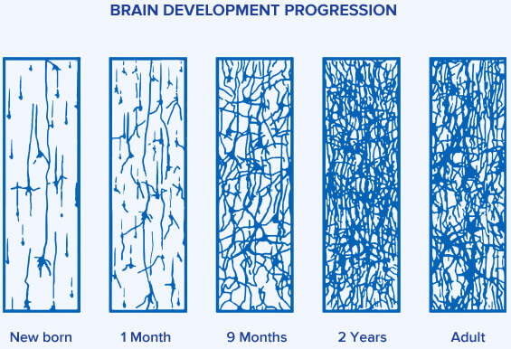
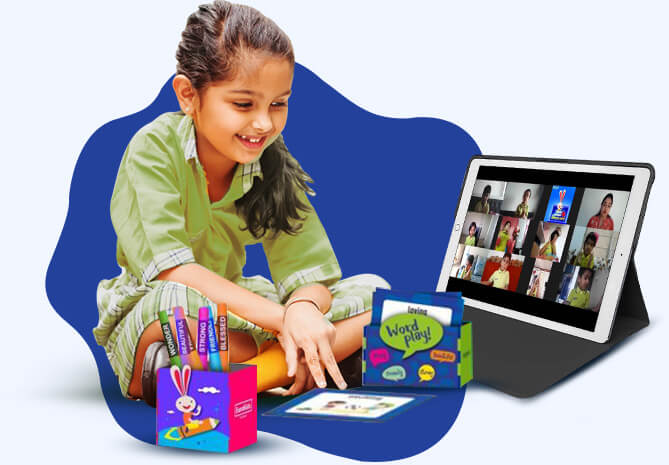
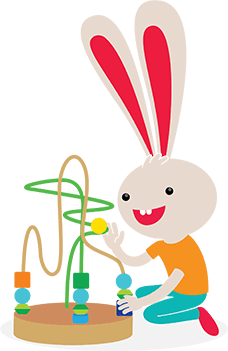
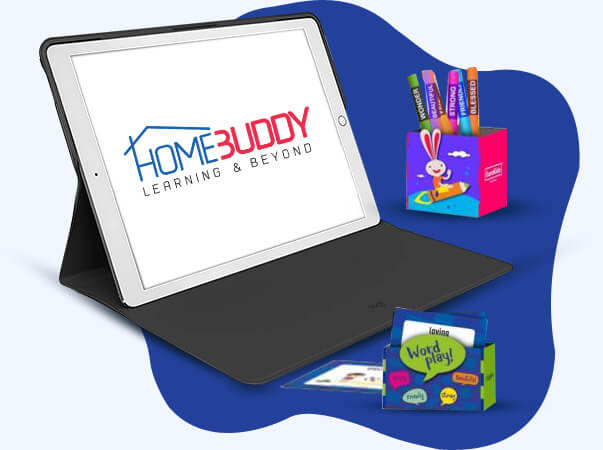
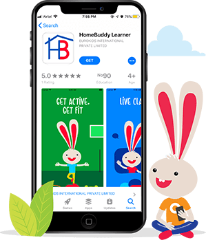

Eurokids Pre-School
Madipakkam, Chennai
Sessions: June & October
Programs: PlayGroup, Nursery, EuroJunior, EuroSenior & After School
Sessions: June & October
Programs: PlayGroup, Nursery, EuroJunior, EuroSenior & After School
Is Early Childhood Education important?
90% of brain development happens before the age of 6. Hence, early childhood education is the key to a flying start for every child

Maximum
connections are
made at this stage
Here's what your child could miss out without early schooling at the right age.
Improved social skills
No need for
special education instruction
Better marks and
enhanced attention spans
Fewer behavioural problems
Development
milestones achieved
Better language development
Reduced discipline issues
Increased social interactions
Better life success
Getting highly skilled jobs
4 times more likely
to graduate
with high grades
Does online education work for toddlers?

Absolutely! The only way to ensure uninterrupted learning today is by learning online. EuroKids is best equipped to conduct online with our proven online early school program, we emulate classroom learning with a host of features in the HomeBuddy App.
EuroKids Early School Edge
Age-Specific
Program

Developed By
Child Psychologists
Certified
Teachers
20 Years
Experience
3 Lac +
Students

20,000 Hrs
Curriculum Research
40+
Awards Won

6 Lac + Hours
In Training Our Partners

With over 20 years of preschool expertise,
EuroKids Child-First teaching ideology is proven to provide holistic development for your child,
even in an online environment.
EuroKids HomeBuddy App for Online Learning

Trust only the experts for online learning, our HomeBuddy app is built to make learning from home interactive, effective and fun. The app ensures uninterrupted learning with a curriculum designed specifically for online classes, and host of features like Weekly Learning Plans, Recorded Lessons, DIY activities, Parent Corner, Fun Zones and more.
